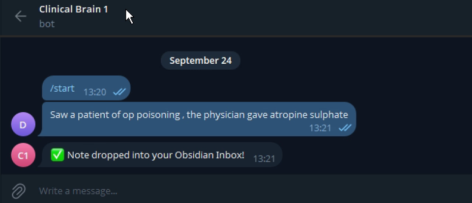
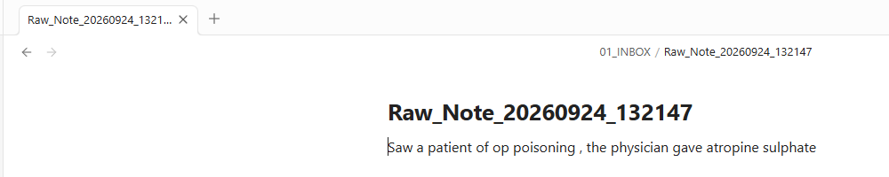
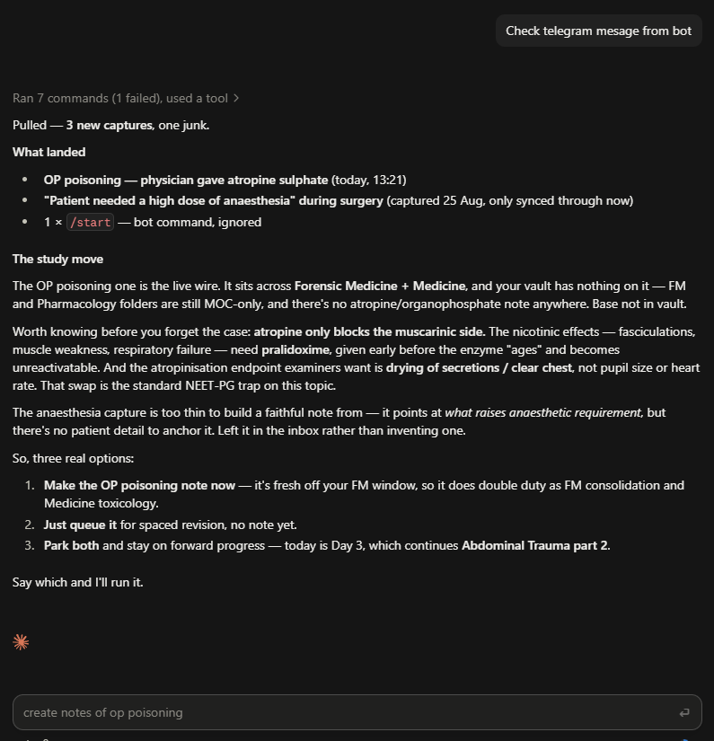

Capture on Telegram

One line, typed wherever I am. The bot confirms within seconds, so I know the note is safe before I pocket the phone.
real chat, 24 Sep, 13:21I built this for my medical studies. A Telegram bot takes one line from my phone, Google Apps Script saves it to GitHub, it syncs into my Obsidian vault, and Claude files it under written rules, without inventing a single fact.

One line, typed wherever I am. The bot confirms within seconds, so I know the note is safe before I pocket the phone.
real chat, 24 Sep, 13:21A Google Apps Script web app receives the message, adds a timestamp and saves it to a private GitHub repo. Every note is a commit, so nothing gets lost.
backend, so this one is drawn
My Obsidian vault is a clone of that repo. The note arrives as Raw_Note_20260924_132147, with my exact words.

When I ask it to check the inbox, Claude reports 3 captures and ignores the junk. It leaves the one that's too thin for me instead of inventing a note, then offers the next step.
it knows when to stopA fast capture is worthless if the machine embroiders it. These rules live in the vault's instruction file, and Claude follows them on every run.
/start and duplicatesInspectors text a finding from site, and it lands as a dated record in a shared sheet.
One line after each call becomes a CRM update on the right deal.
Staff log a shortage or a broken machine from their phone, and the manager gets a daily summary.